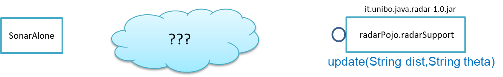
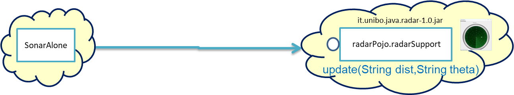
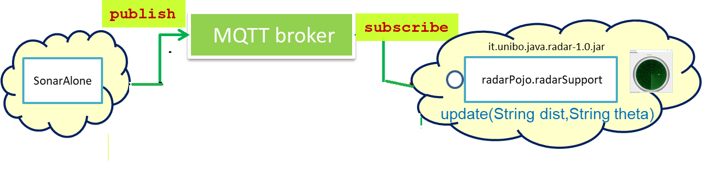

Analisi del problema¶
Dopo l’analisi dei requisiti e i colloqui con il committente, possiamo riassumere la situazione elencando ciò che abbiamo e disposizione e le problematiche che si prospettano.
Gestione del sensore |
Il software fornito dal committente ( |
Realizzazione del |
A questo fine è disponibile il POJO realizzato da |
Gestione del Led. |
Il software fornito dal committente ( |
Quale assemblaggio? |

Occorre capire come i dati del sonar generati sul Raspberry possano raggiungere il PC ed essere usati per
aggiornare il |
{kind=link}
La necessità di integrare i componenti disponibili fa sorgere altre problematiche:
è opportuno incapsulare i componenti disponibli entro altri componenti capaci di interagire via rete? Una fonte di ispirazione in questo senso è il concetto di DigitalTwin;
dove è più opportuno inserire la ‘businenss logic’? In un oggetto che estende il sonar o il
radarSupport? Oppure è meglio introdurre un terzo componente?quale forma di interazione è più opportuna? diretta/mediata, sincrona/asincrona?.
Premessa importante¶
Per analizzare le problematiche implicite nei requisiti, dobbiamo porre molta attenzione a non confondere l’analisi del problema con l’analisi di come pensiamo di risolvere il problema.
Due sono gli approcci principali possibili:
approccio bottom-up: partiamo da quello che abbiamo a disposizione e analizziamo i problemi che sorgono per ‘assemblare le parti disponibili’ in modo da costruire un sistema che soddisfi i requisiti funzionali;
approccio top-down: partiamo analizzando le proprietà che il sistema deve ‘logicamente’ avere, senza legarci a priori ad alcun specifico componente e/o tecnologia. Successivamente, evidenziamo le problematiche che sorgono sia per soddisfare i requisiti funzionali sia per utilizzare (se si pone il caso) componenti forniti dal committente o dalla nostra azienda, considerndo anche framework e infrastrutture disponibili sul mercato (con una evidente propensione all’open-source e al free software).
E’ molto probabile che la maggior marte delle persone sia propensa a seguire (almeno inizialmente) un approccio bottom-up, essendo l’approccio top-down meno legato a enti subito concretamente usabili come ‘building blocks’.
Osserviamo però che il compito de L’analisi del problema non è quello di definire una soluzione, ma quello di porre in luce le problematiche in gioco (il cosa si deve fare) e capire con quali risorse (tempo, persone, denaro, etc. ) queste problematiche debbano/possano essere affrontate e risolte. Sarà compito dei progettisti quello di trovare il modo (il come) pervenire ad una soluzione ‘ottimale’ date le premesse dell’analisi e le risorse a disposizione.
Anticipiamo subito che il nostro approccio di riferimento sarà di tipo top-down, per motivi che si dovrebbero risultare chiari durante il percorso che ora iniziamo seguendo, al momento, un tipico modo di procedere bottom-up.
Sarà proprio rendendoci conto dei limiti di approcci bottom-up che acquisiremo (se non l’abbiamo già) il convincimento che conviene chiarire bene il cosa prima di affrontare il come e che anche il come può essere convenientemente affrontato ritardando o incapsulando il più possibile dettagli legati alle tecnologie utilizzate.
Dispositivi di input e di output¶
Concettualmente, il Sonar è un dispositivo di input e il Led e il RadarDisplay sono dispositivi di output.
In generale, nella programmazione ad oggetti, per utilizzare un dispositivo di output è sufficiente invocare un metodo, mentre l’uso di un dispositivo di input presenta due modalità principali:
il componente interessato ai dati prodotti dal dispostivo di input, ne invoca un metodo ‘bloccante’ (ad esempio
read()) che fornisce un dato non appena disponibile. Questo modo di procedere prende anche il nome di interazione a polling;il componente consumatore dei dati si relaziona con dispostivo di input seccondo il pattern observer.
Il pattern observer¶
Nella programmazione ad oggetti, un componente osservabile invoca un metodo di
invio di dati (quando disponibili) a tutti i componenti che sono stati in precedenza registrati
presso di lui come osservatori. Un componente può essere registrato come osservatore solo
se implementa il metodo di invio dati (di solito denominato update).
La registrazione di un observer presso un observable può essere fatta dall’observer stesso o, preferibilmente, da un configuratore del sistema: in questo modo nessuno dei due componenti avrebbe alcun riferimento staticamente definito all’altro.
Una ‘variante’ del pattern observer è costituita dalla possibilità che un dispositivo di input possa ‘pubblicare’ i propri dati su una risorsa esterna osservabile. Torneremo su questa variante più avanti (si veda comunicazione mediata).
Notiamo che software disponibile per il Sonar opera come produttore di dati, ma non offre operazioni
per la registrazione di osservatori; al momento, un componente interessato ai dati del Sonar deve fare in modo
che il proprio dispositivo di input
sia il dispositivo di output del Sonar e poi utilizzare una operazione come la read().
Un approccio BottomUp¶
Per costruire il sistema partendo dai dispositivi, occorre capire come l’informazione fornita dal dispositivo di input Sonar possa essere elaborata in modo da fluire nel modo voluto ai dispositivi di output.
Focalizzando l’attenzione sul requisito RadarGui e quindi sulla interazione sonar-radar (per il Led valgono considerazioni analoghe) possiamo rappresentare la situazione come segue:
Comunicazione diretta Le ‘nuvolette’ in figura rappresentano gli strati di software che permettono ai dati generati dal Sonar
di eseere ricevuti dal |
 |
Comunicazione mediata Richiede la presenza di un componente mediatore (broker), di solito realizzato da terze parti
come servizio disponibile in rete. Un generatore di dati (come il Sonar) pubblica informazione
su una topic del broker; tale informazione
che potrebbe essere ricevuta (‘osservata’) da uno o più ricevitori (come il |
 |
{kind=link}
{kind=link}
Chi realizza la logica applicativa?¶
Seguendo il Principio di singola responsabilità (e un pò di buon senso) la realizzazione degli use-cases applicativi non deve essere attribuita al software di gestione dei dispositivi di I/O.
Dunque, la nostra analisi ci induce a sostenere
l’opportunità di introdurre un nuovo componente (che possiamo denominare Controller), che abbia la
responsabilità di realizzare la logica applicativa.
Il Controller deve ricevere in ingresso i dati del sensore HC-SR04, elaborarli e
inviare comandi al Led e dati al RadarDisplay.
Ma ecco sorgere un’altra problematica legata alla distribuzione:
Il
Controllerpuò risiedere su RaspberryPi, sul PC o su un terzo nodo. Tuttavia, il committente ha escluso (per motivi di costo) la possibilità di introdurre un altro nodo di elaborazione.La presenza di un broker in forme di comunicazione mediata potrebbe indurci ad attribuire responsabilità applicative al mediatore. Ma è giusto/opportuno procedere i questo modo?
Dunque si tratta di analizzare dove sia meglio allocare il Controller :
|
Si avrebbe una maggior reattività nella accensione del Led in caso di allarme. Inoltre … |
|
Si avrebbe più facilità nel modificare la logica applicativa, lasciando al Raspberry solo la responsabilità di gestire dispositivi. Inoltre … |
|
Al momento escludiamo questa possibilità, riservandoci di riprendere il problema quando esamineremo architetture distribuite ‘space-based’. |
Quale ‘collante’? I protocolli di comunicazione¶
Dovendo realizzare un sistema distribuito (ed eterogeno), i componenti del sistema devono poter scambiare informazione (in modo che possano capirsi).
Per ottenere questo scopo, sono stati sviluppati numerosi protocolli che, avvalendosi di una appropriata infrastruttura di rete, permettono lo scambio di informazione tra componenti che diventano la parti costituenti di un sistema proprio grazie al ‘collante’ offerto dal protocollo.
Poichè protcolli diversi inducono a concepire sistemi organizzati in modo diverso, è opportuno riflettere sul tipo di protocollo che è possibile scegliere e sul tipo di architettura che scaturisce da questa scelta.
In questa fase, possiamo diviedere i protocolli di comunicazioni più diffusi in due macro-categorie:
protocolli punto-a-punto che stabiliscono un canale bidirezionale tra compoenenti di solito denominati client e server. Esempi di questo tipo sono
UDP, TCP, HTTP, CoAP, Bluetooth.protocolli publish-subscribe che si avvalgono di un mediatore (broker) tra client e server. Esempio di questo tipo di protocollo è
MQTTche viene supportato da broker comeMosquitto, RabbitMQ, HiveMq, etc.
Tipi di protocollo¶
La classe ProtocolType enumera i protocolli cui potremo fare riferimento in seguito.
public enum ProtocolType { tcp, udp, coap, mqtt, http, ws, serial, bluetooth }
Attualmente, dovremmo avere conoscenze su come usare protocolli quali TCP/UDP e HTTP ma siamo forse meno esperti nell’uso di supporti per altri.
Seguiamo dunque, per adesso, l’idea delle comunicazioni dirette facendo riferimento al protocollo TCP (più affidabile di UDP e supporto di base per HTTP) che assume ora il ruolo di ‘collante’ principale tra le parti.
Considerazioni architetturali¶
Per approfondire l’analisi delle problematiche che si pongono quando si voglia far comunicare due componenti software con TCP, in questa sede non ci interessano tanto i dettagli tecnici di come opera il protocollo, quanto le ripercussioni sulla architettura del sistema.
A questo riguardo possiamo dire che nel sistema dovremo avere componenti capaci di operare come un client-TCP e componenti capaci di operare come un server-TCP.
Server |
Il server opera su un nodo con indirizzo IP noto (diciamo |
Client |
Il client deve dapprima aprire una |
Tipi di interazione¶
Inizialmente il server opera come ricevitore di messaggi e il client come emettitore. Ma su una connessione TCP, il server può anche inviare messaggi ai client. Conviene dunque introdurre una terminologia per le interazioni a scambio di messggi:
fire-and-forget: il messaggio (che chiamiamo anche dispatch) è inviato con l’aspettativa che sia ricevuto ed elaborato, ma senza alcuna attesa di informazione di ritorno da parte del server;
request-ack: il messaggio (che chiamiamo anche invitation) è inviato con l’aspettativa di ricevere indicazione dell’avvenuta ricezione (un acknowledgement) da parte del server;
request-response: il messaggio è inviato con l’aspettativa di ricevere una risposta, di livello applicativo e pertinente al messaggio, da parte del server.
In caso di request, il cliente potrebbe bloccarsi in attesa della risposta/ack o potrebbe anche proseguire le sue attività, con l’intento di ricevere ed elaborare la risposta/ack in un secondo momento. In questo secono caso si parla di comunicazione asincrona.
In ogni caso, la possibilità che il server possa inviare messaggi al client, imnplica che
un client deve essere anche capace di agire come ricevitore di messaggi.
Un primo abstraction gap¶
La necessità di inviare e ricevere messaggi via rete segnala un gap tra il livello tecnologico dei componenti software resi disponibili dal committente e le necessità del problema.
Coma analisti, osserviamo che un gap relativo alle comunicazioni di rete può essere superato avvalendosi di librerie (oggi disponibili in tutti i linguaggi più diffusi ) che permettono l’uso di protocolli quali TCP, UDP, HTTP, etc.
Osserviamo anche che questo gap si può presentare in modo sistematico in tutte le applicazioni distribuite e Sarebbe dunque opportuno cercare di colmarlo in modo non episodico, introducendo componenti riusabili che possano ‘sopravvivere’ all’applicazione che stiamo costruendo per poter essere impiegati in futuro in altre applicazioni distribuite.